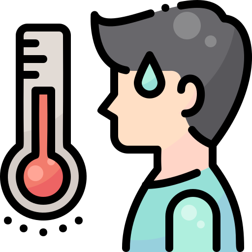

Sintomas da Dengue
Reconheça a Dengue: Principais Sintomas

Febre Alta Repentina
A dengue costuma iniciar com uma febre alta (39°C a 40°C) que surge de forma súbita. Geralmente, dura de 2 a 7 dias.
Dores Intensas de cabeça
Dores de cabeça: Intensa, especialmente na região atrás dos olhos.
Dor muscular
Dores: Musculares e nas articulações.
Cansaço
Cansaço e fraqueza muito fortes, mal-estar geral.

Manchas vermelhas na pele
Manchas vermelhas (exantema), que podem aparecer após o terceiro ou quarto dia.
2. Sinais de Alarme: Busque Ajuda Imediata!
Estes sinais surgem na **fase crítica** (quando a febre baixa, entre o 3º e o 7º dia) e indicam que a doença está se agravando. **Procure uma EMERGÊNCIA imediatamente**.
- ⚠️ **Dor abdominal intensa e contínua** (ou dor ao toque/palpação na barriga).
- ⚠️ **Vômitos persistentes** (3 a 5 vezes ou mais em 24 horas).
- ⚠️ **Sangramento de mucosas** (gengiva, nariz) ou presença de sangue no vômito/fezes.
- ⚠️ **Acúmulo de líquidos** (inchaço repentino, dificuldade para urinar).
- ⚠️ **Letargia ou Irritabilidade** (sonolência excessiva, desmaio, ou confusão mental).
- ⚠️ **Hipotensão postural** (tontura ou queda de pressão ao levantar).
**Não use medicamentos com Ácido Acetilsalicílico (AAS) ou anti-inflamatórios!** Eles aumentam o risco de hemorragias. Siga sempre a orientação médica.
Exames
Há três tipos de exame disponíveis no Brasil para detectar a doença: antígeno NS1, sorologia e RT-PCR.
Antígeno NS1
- Quando fazer: Ideal para os primeiros dias de sintomas, geralmente até o 5º dia, quando o vírus está se replicando no corpo.
- O que detecta: Uma proteína específica do vírus da dengue, a NS1.
- Tipos: Pode ser feito como teste rápido (em farmácias e laboratórios) ou como exame laboratorial.
Teste Sorológico (IgM e IgG)
- Quando fazer: A partir do 6º dia dos sintomas.
- O que detecta: Anticorpos que o corpo produz para combater a infecção. O IgM indica infecção recente e o IgG pode indicar uma infecção antiga ou resposta imune mais forte.
- Tipos: É um teste laboratorial, não encontrado em farmácias.
RT-PCR (Teste Molecular)
- Quando fazer: Também nos primeiros dias de infecção, quando o vírus está ativo.
- O que detecta: O material genético do vírus, o que permite a identificação da presença do vírus no organismo.
- Tipos: É um teste laboratorial realizado a partir de uma amostra de sangue.